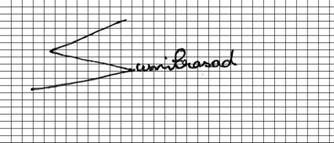
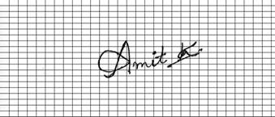
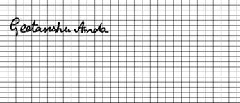
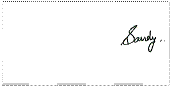
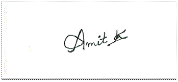
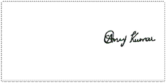

IMAGE PROCESSING ON SCANNED IMAGES
Abstract
In this paper certain parameters of an image (mostly signature image) are taken into consideration and then various methods are applied on the image to get various results.
Author:
Subodh Prasad
Paper Transcript of Paper Titled :
IMAGE PROCESSING ON SCANNED IMAGES
Image Processing on Scanned Images
Subodh Prasad
PhD Research Scholar
Information Technology Department, Kumaun University
Nainital, Uttarakhand, India.
Abstract— In this paper certain parameters of an image (mostly signature image) are taken into consideration and then various methods are applied on the image to get various results.
Keywords-Software Image Processing, Image Manupulation (key words)
Introduction
Multiple methods are applied on the image to get various outputs from the image. The treatments of images have been done on the following basis.
1. Size
2. Connectivity
3. Intensity Difference
4. Margins
6. Placing single or two dots after signature
7. Signature Placing
Size
The signature is divided into a grid of 6×10 which contains 60 segments. If a considerable amount of pixels as compared to the total signature pixels (which are calculated) present in all the segments then the signature are said to be large. Similarly if significant signature pixels are present in lesser number of segments then we consider the handwriting to be of medium size. If the signatures are present in very less segments then it is considered to be small. The analysis of signatures is quite simple and intuitive. The size happens to be a very important characteristic as far as signature analysis is concerned. It is known that the characteristics that are found from the size parameter are quite reliable. It is also true that finding size is relatively easy and hence is more accurate. As accuracy related with this parameter is more, it is a very important parameter. People with large sized signatures are Socially Extrovert, expansive with their movements and unwilling to concentrate or confine their energies to small details. People with medium sized signatures are normally social, have got average ability to concentrate and are general people who don’t do any exceptional things.

Image showing signatures of large size

Image showing signatures of medium size

Image showing signatures of small size
Connectivity
Connectivity is a parameter which we measure if the signatures done by a person are connected to each other or not. The level of connectivity determines the characteristics of a person. The leftmost signature point is analyzed and its neighboring pixels are traversed and made white. This is done by the use of breadth first search. The connected components are made white. Once a discontinuity comes the counter is incremented by 1 and the next starting point is found by again finding the leftmost signature point. People whose signatures are not connected are people with bad handwriting in childhood who instead of cursive found printing better option. People with connected handwriting are highly sequential in thought and action; they usually rely on practical methods rather than hunches.
Below is brief concept of Breadth First Search which has been applied here to get connected components or neighbor pixels.
Breadth-first search
Breadth- first search is one of the simplest algorithms for searching a graph and the archetype
for many important graph algorithms.
Given a graph G = (V, E) and a distinguished source vertex s, breadth-first search systematically explores the edges of G to "discover" every vertex that is reachable from s. It computes the distance (smallest number of edges) from s to each reachable vertex. It also produces a "breadth-first tree" with root s that contains all reachable vertices. For any vertex v reachable from s, the path in the breadth-first tree from s to v corresponds to a "shortest path" from s to v in G, that is, a path containing the smallest number of edges. The algorithm works on both directed and undirected graphs.
vertices; they represent the frontier between discovered and undiscovered vertices.
BFS(G, s)
1 for each vertex u _ V [G] - {s}
2 do color[u] ← WHITE
3 d[u] ← ∞
4 π[u] ← NIL
5 color[s] ← GRAY
6 d[s] ← 0
7 π[s] ← NIL
8 Q ← Ø
9 ENQUEUE(Q, s)
10 while Q ≠ Ø
11 do u ← DEQUEUE(Q)
12 for each v _ Adj[u]
13 do if color[v] = WHITE
14 then color[v] ← GRAY
15 d[v] ← d[u] + 1
16 π[v] ← u
17 ENQUEUE(Q, v)
18 color[u] ← BLACK
The operation of BFS on an undirected graph. Tree edges are shown shaded as they are produced by BFS. Within each vertex u is shown d[u]. The queue Q is shown at the beginning of each iteration of the while loop of lines 10-18. Vertex distances are shown next to vertices in the queue.
The procedure BFS works as follows. Lines 1-4 paint every vertex white, set d[u] to be infinity for each vertex u, and set the parent of every vertex to be NIL. Line 5 paints the source vertex s gray, since it is considered to be discovered when the procedure begins. Line 6 initializes d[s] to 0, and line 7 sets the predecessor of the source to be NIL. Lines 8-9 initialize Q to the queue containing just the vertex s. The while loop of lines 10-18 iterates as long as there remain gray vertices, which are discovered vertices that have not yet had their adjacency lists fully examined. This while loop maintains the following invariant:
At the test in line 10, the queue Q consists of the set of gray vertices.
Although we won't use this loop invariant to prove correctness, it is easy to see that it holds prior to the first iteration and that each iteration of the loop maintains the invariant. Prior to the first iteration, the only gray vertex, and the only vertex in Q, is the source vertex s. Line 11 determines the gray vertex u at the head of the queue Q and removes it from Q. The for loop of lines 12-17 considers each vertex v in the adjacency list of u. If v is white, then it has not yet been discovered, and the algorithm discovers it by executing lines 14-17. It is first grayed, and its distance d[v] is set to d[u] +1. Then, u is recorded as its parent. Finally, it is placed at the tail of the queue Q. When all the vertices on u's adjacency list have been examined, u is blackened in lines 11-18. The loop invariant is maintained because whenever a vertex is painted gray (in line 14) it is also enqueued (in line 17), and whenever a vertex is dequeued (in line 11) it is also painted black (in line 18). The results of breadth-first search may depend upon the order in which the neighbors of a given vertex are visited in line 12: the breadth-first tree may vary, but the distances d computed by the algorithm will not.
Our Implementation algorithm to check the connectivity:
- The leftmost signature pixel is found. This is done by finding the pixels’ intensity horizontally. The pixel values are found along horizontal line to get the leftmost signature pixel.
- Breadth First Search is applied at the leftmost signature pixel. The points neighboring to the leftmost point which are close to black are traversed and their coordinates are stored in the array. The color of the traversed point is changed to whitish so that it is not traversed again. If we have a threshold t of intensity value below which we consider the pixel to be blackish we assign the traversed parts an intensity value of t+1 so that they are not traversed again. After one connected component is traversed a counter (initially initialized to zero) is incremented.
- Again the same process is repeated, leftmost point is found and BFS is applied.
- The value of the counter gives the number of connected components.
If the value of connected components found out is more than 1 the signatures are considered to be not connected.
Shows connected signatures
Shows printed signatures.
Intensity Difference
Intensity difference is another very important parameter which determines the characteristics of a person. For the calculation purposes the intensity at each signature point (dark intensity point) is calculated. The maximum and the minimum intensity found in the signature points are stored. Difference between these two quantities is found. If a considerable difference appears it means that the person in inconsistent and does not stick to harsher decisions. Less difference means that the person is confident, not jerky and sticks to harsher decisions.
Shows signatures with varying intensity
Margins
The use of margins is also a very important characteristic. In this section we check if the start of the signatures are placed near to the margins (in the left side), in the middle or on the right side. To accomplish this coordinates of the left most signature point is found. Based on this we will determine if the margin has been used properly, crushed right or no margin is used. This will be responsible for determining the characteristics of the person. People who write from the left margin are compulsively busy, leave no stone unturned. They can have miserly nature as well. They don’t leave any room for opinion or rights of others. They also feel that they must fill every moment of their life with activity. People who write in the middle are normal people with good thoughts. People who write on the right side are dangerously impulsive, don’t learn from their mistakes, they are also prone to have accidents due to their irregular behavior. These people are also not very good planners and just concentrate on the present.
.
Shows signatures in which margins have been used properly
Shows signatures in which margins have not been used

Shows signatures in which crushed right margins have been used
Placing single or two dots after signature
Many times people place some dots after their signatures. This is a distinguishing parameter and is detected by finding the neighbors of each signature pixel. If some signature pixels appear that have neighbors below our threshold value of neighbors then that pixel is considered to be a point. If a limited amount of points are detected we assume that the signature contains dots. People who place dots in theirsignatures generally wrap up themselves and then finally come to a decision.
Shows signatures which possess dots at the end
Signature Placing
In this parameter the position of signatures is taken into account. In the margins parameter we were taking the start of the signatures as a differentiating factor but in signature placing the placing of the whole signature is considered. For this we take the value of the y coordinates of the leftmost signature pixel and the rightmost signature pixel. The distance of the rightmost point from the rightmost end of the paper is say a. In the same way the distance between the leftmost signature point and the left margin of the paper is taken to be b. The threshold taken for this purpose is a-b. Based on the value of this threshold the placing of the signatures is determined. If the signature is considered to be in the left portion then the person remains in self doubt, he has got insecurity about his public image, feels apprehensive about the future and clings to the past and familiar. If the signatures are placed on the middle part then the person wants to be in the centre of everything that is going around him, he wants to be left out of nothing, wants to be a centre of attention and if someone is talking in a corner he wants to know what the talk is all about. If the person writes on the right side then the person is very normal, adheres to the manners taught to him and is forward thinking with regards to public self image.
Shows signatures which are placed to the left

Shows signatures which are placed on the middle part

- Figure 13 Shows signatures which are placed to the right
References
Ballard (1982), Computer Vision --TA1632.B34--
Baxes, Gregory A (1994) DIGITAL IMAGE PROCESSING, Wiley *IT* (includes disk with PC software)
Castleman, Kenneth (1979), Digital image Processing Prentice-Hall, --TA1632.C37-- (recommended by UTHSCSA Image Tool)
Foley, J.D., VanDam, A. (1982) FUNDAMENTALS OF INTERACTIVE COMPUTER GRAPHICS, Reading Massachusetts, Addison-Wesley, chapter 17.
Gonzalez,R.C. (1977), DIGITAL IMAGE PROCESSING, Reading Massachusetts: Addison_Wesley.
Gonzalez,R.C. and Wintz, P. (1987), DIGITAL IMAGE PROCESSING 2nd Edition, ADDISON WESLEY, Reading Mass.
Kaye, Brian H. (1989), A RANDOM WALK THROUGH FRACTAL DIMENSIONS, VCH, New York.
Marr, David (1982) VISION, W. H. Freeman
Pavlidis, T. (1982) ALGORITHMS FOR GRAPHICS AND IMAGE PROCESSING, Computer Sci. Press, Rkvl., MD.
Pavlidis,T. (1977) STRUCTURAL PATTERN RECOGNITION, New York: Springer-Verlag.
Pratt, W. K. (1978), DIGITAL IMAGE PROCESSING. New York: Wiley-Interscience. TA1632.P7
Rosenfeld, A. and Kak,A. C. (1982), DIGITAL PICTURE PROCESSING, Second Edition, Vol. 1,2. NY: Academic Press, TA1630.R67
Russ, J.C. (1986), PRACTICAL STEREOLOGY. New York: Plenum Press
Russ, J.C. (1990), COMPUTER-ASSISTED MICROSCOPY, The Measurement and Analysis of Images, Plenum, N.Y.
Russ, J.C. (1992), THE IMAGE PROCESSING HANDBOOK, CRC Press, Boca Raton, FL
Russ, John C.(1995), THE IMAGE PROCESSING HANDBOOK, 2nd ed., CRC Press. *IT*
Wegman, E.J., DePriest,D.J. (eds) (1986) STATISTICAL IMAGE PROCESSING GRAPHICS, NY,Marcel Dekker Inc.